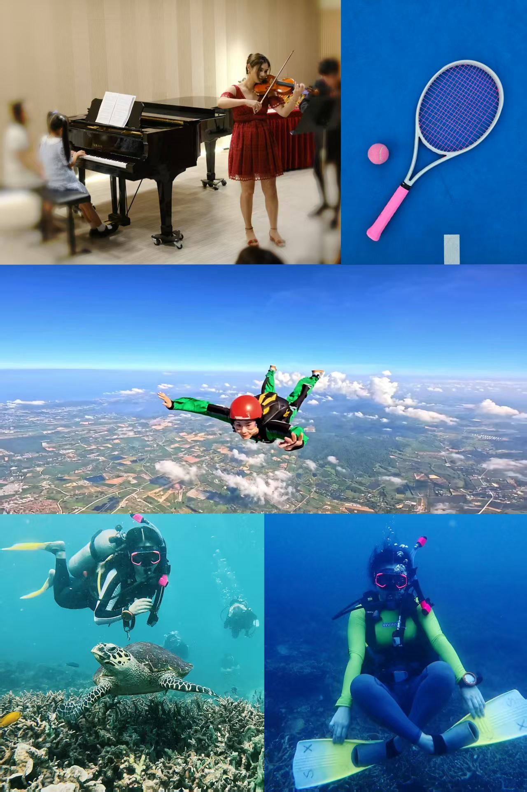

My path into design ran through product: I started my career as a product manager, shipping consumer apps used by a million people. Along the way I discovered that what I really loved was UX design itself — so I moved to an agency, where I could work across many kinds of projects: sports media, hospitality, financial services.
In recent years my work has been mostly B2B, and its rhythm is very different from consumer products. In enterprise software the user is a professional in the middle of a working day: success is measured in accuracy, efficiency, and trust rather than engagement; a single workflow can cross many roles; and the person who buys the product is rarely the person who uses it. Designing well here means understanding the domain deeply before touching a screen. Along that journey, my PM foundation kept paying off — I don’t need business impact translated for me; revenue, retention, and roadmaps are my first language. And because I see a project horizontally, I know when to insist and when to compromise — a way of partnering with product teams that sets me apart from most designers. Enterprise work alone has never satisfied my appetite for design, though: from time to time I take on consumer side projects — Kokorolab and TimeWorld in this portfolio are two of them.
As my experience grew, I moved into management — design lead, then UX manager — and learned a different craft: people skills, and how to empower a high-performing design team (that story is a case study of its own). Now AI is changing how design teams work, and I lead that change hands-on: I use AI daily for research synthesis, prototyping, and building — Claude, Codex, and vibe-design workflows. This site is the proof: I designed and built it with AI assistance, end to end.
Outside work
I’m passionate about exploring the world. I skydive and scuba dive — up there and down there I focus completely, and feel most connected to the world. I play the violin and tennis, and travel whenever I can. I like things that demand full attention.

Contact
byang03@gmail.com
linkedin.com/in/yangboyi
instagram.com/yang_boyi